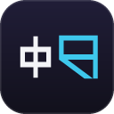
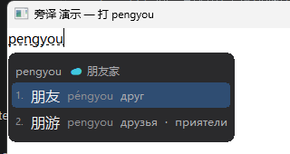

Для тех, кто учит русский
学俄语，
去交流。
从第一句 Привет，到真正听懂、开口、交朋友。
课程、词典、语伴和工具，都替你整理在这里。
russian.world
121 个精选入口持续维护

本站作者的开源作品旁译 Pangyi
敲拼音，
顺手看懂俄语。
旁译是一款面向中俄语言学习者的 Windows 输入法。中文候选旁直接显示俄语释义，把查词融进聊天、写作和每一次输入。
- 免费开源
- 完全离线
- 无广告
- Windows 10 / 11
真实候选窗

pengyou→朋友друг, друзья
俄语资源库按目标，找到真正有用的入口。
收录 121 个经过筛选的课程、词典、听力、语伴、求职兼职、公开资料与学习工具。
没找到相关条目，换个词试试？
核验说明：“基础核验”表示已检查来源域名、HTTPS 与重复项，不代表平台始终可用或为本站背书。资源会持续更新；本站不收录盗版教材、破解软件和来源不明的分享链接。
Сегодня · 今日俄语
Маленький шаг — тоже движение.
一小步，也是在前进。
适合提醒自己：语言学习不需要一次完成很多。
每天 20 分钟
今天完成这四件小事
连续 0 天0 / 4
完成情况只保存在当前浏览器。
从零开始或系统进阶系统课程 10 个
中文课程、俄罗斯官方平台与国际学习产品。
查词，更要看真实用法词典与翻译 25 个
覆盖中俄互译、俄语释义、专业术语、例句、重音、变位与母语发音。
把俄语变成职业能力俄语求职 20 个
中国招聘、俄罗斯就业、国际职位、翻译接单与远程自由职业。
职位和平台规则会随时变化。申请前请核验招聘方身份、工作许可、合同、薪资与付款方式；不要向陌生招聘方支付押金、培训费或签证代办费。
在俄罗斯边学习边积累经验留学生兼职 16 个
临时班次、线上接单、家教服务、配送兼职与学生实习。
开始申请前，先确认自己的资格
俄罗斯官方留学门户说明：在具有国家认证的大学全日制学习的外国学生，可在课余时间免工作许可就业，并需向雇主提供在读证明；非全日制等其他情况可能需要工作许可或专利。请同时向学校国际学生办公室、雇主和当地主管部门确认最新要求。
查看俄罗斯官方说明 ↗
部分平台还要求俄罗斯银行卡、税号、当地手机号或可用的自雇者身份。平台能够注册，不等于你的身份一定允许承接该工作。
走进真实的国际社区全球社交 10 个
俄罗斯常用平台与全球主流社交软件。
不知道从哪里开始？三条学习路线
不用一次打开所有网站，按你的目标选择一条就够了。
只收录合法、公开或自有内容公开资料与网盘 10 个
开放图书馆、公共版权文本，以及管理个人资料的云盘工具。
把自己的学习系统搭起来学习工具与软件 10 个
输入法、记忆卡、笔记、写作检查与资料管理。
学习间歇，也要照顾自己休息一下，换换脑子。
学累了就抽一张生活灵感卡，短暂离开屏幕再回来。
俄语之外的小休息灵感游乐场
挑一个有感觉的，让长期学习不那么累。
三道题，发现另一个自己
你今天，
是哪种颜色？
安静的蓝，好奇的黄，还是快乐的绿？
每种心情，都有自己的玩法。
轻松小测试，仅供娱乐，没有标准答案。
开始交流之前真诚，也要保护好自己。
语言交流连接真实的人，也需要清晰的边界和基本判断。
不付费换资源，不泄露隐私。
先保护个人信息
不要过早发送住址、证件、学校班级或私人照片。首次语音和见面都告诉可信的人。
隐私与人身安全
尊重版权和来源
网盘用于保存自有资料；教材、课程与影视请从官方或明确开放的渠道获取。
合法使用资料
把交流变成习惯
先约定双方语言和时长。每周几次短交流，比偶尔聊很久更容易坚持。
稳定胜过用力
遇到索要钱款、诱导投资、可疑下载或越界言行，立即停止交流并使用平台举报功能。